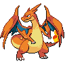
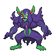

THE SEARCH SPACE / INTERACTIONS
A Pokémon’s value
depends on who it plays with.
One weather change helps some teammates and holds others back. The useful unit of search is the combination.

Mega Charizard YDrought → sunHeat Wave ×0.5
 PelipperDrizzle → rain
PelipperDrizzle → rainWater Weather Ball ×1.5
RainONE SHARED FIELD
Weather enables or boostsNo bonus / a costSelect a teammate ↗

Grimmsnarl supports either mode.Reflect + Light Screen help protect teammates in sun or rain.
↳
Why keep both weather setters?
One roster can offer different plans. You choose four of six for a match, and switching can change the weather during battle. Sun supports Venusaur; rain supports Archaludon and Basculegion. Which plan is useful depends on the opponent and how you play it.
OPTIMIZATION VOCABULARYNonseparability
A choice’s contribution depends on the other choices around it. Scoring each Pokémon in isolation can miss that.